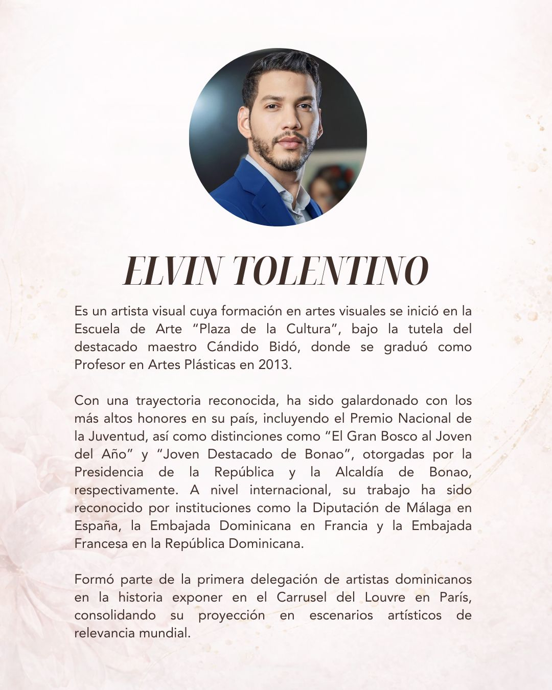

Conmemoración del Día Internacional de la Mujer
En el marco de la conmemoración del Día Internacional de la Mujer, prestigiosas profesionales del ámbito tributario de la República Dominicana han decidido contribuir a la plataforma Women of IFA Network (WIN) mediante artículos académicos que abordan temas de vanguardia a nivel local, así como tendencias internacionales en materia fiscal. Estas contribuciones buscan promover el intercambio de ideas, enriquecer el debate técnico y profesional, y resaltar el valioso liderazgo y la activa participación de las mujeres en esta disciplina.
Germania Montás
Socia
Boneta Consulting, S.R.L.
Andrea Paniagua
Socia Líder de Impuestos y Asuntos Legales
Pricewaterhouse Interaméricas
Chaly Cruz
Abogada
Máster en Derecho Administrativo por la PUCMM
Máster Oficial en Hacienda Pública y Administración Tributaria del Instituto Fiscal de España (IEF/UNED)
Nota: Para una mejor lectura en dispositivos móviles, los artículos se abren en una nueva pestaña.

Interpretado por la violinista invitada